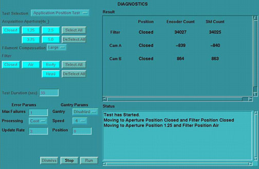
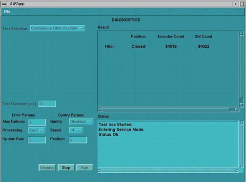
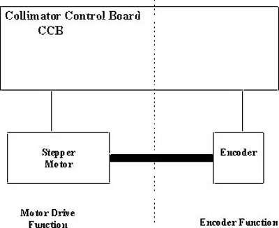
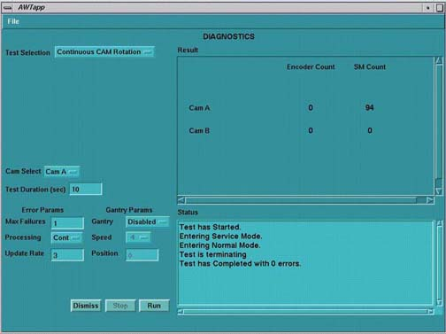
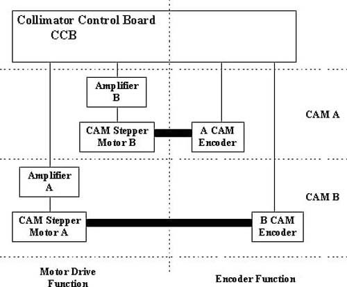
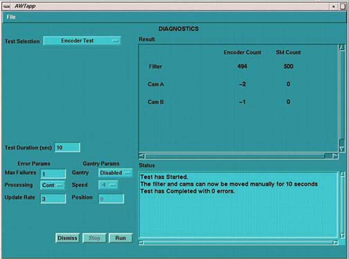

Proprietary to General Electric
Direction 5181166-800, Rev# 7
BrightSpeed Select Service Methods Adv
Proprietary to General Electric |
The Collimator Functional Diagnostic tests are accessed from the Service Desktop by choosing Diagnostics, X-Ray Generation. The “Collimator and Filtration” test selected has four sub-functional tests, which are described in the following sections.
[SERVICE DESKTOP] -> [DIAGNOSTICS] -> [X-RAY GENERATION] -> [COLLIMATOR AND FILTRATION TEST] -> [APPLICATION POSITION TEST]
Illustration 1: Collimator Application Test GUI

This test continuously positions the collimator and filter to the selected position.
Test runs in continuous modes, which help detect intermittent operating conditions.
Means to visually validate the aperture and filter positions.
Functional validation of the operation of the collimator.
Look for highlighted fields that indicate the cam or filter did not make it to position. Check the log for additional information, when this occurs.
Test can be run from application or diagnostic firmware download.
Watch for finger pinch hazards.
Attempt to move the filter and/or cams, when test is complete, and verify motor has a lot of holding torque.
[SERVICE DESKTOP] -> [DIAGNOSTICS] -> [X-RAY GENERATION] -> [ COLLIMATOR AND FILTRATION TEST] -> [CONTINUOUS FILTER POSITION TEST]
Illustration 2: Collimator Continuous Filter Position Test GUI

This test continuously moves the filter from one extreme to another.
Verify no mechanical binding is present.
Manual mode for signal tracing.
Check for motion when errors indicate no motion sensed.
If the display does not indicate changes in the encoder count, visually check the filter for motion:
If filter is moving, failure is in the encode circuit.
If filter is not moving, failure is in the drive circuit.
Test can be run in the applications and diagnostic download.
Watch for finger pinch hazards
The filter drive can be divided into two functions:
Motor Drive (Positioning driver)
Encoder (Position feedback)
Illustration 3: Collimator Filter Position

[SERVICE DESKTOP] -> [DIAGNOSTICS] -> [ X-RAY GENERATION] -> [COLLIMATOR AND FILTRATION] -> [CONTINUOUS CAM ROTATION TEST]
Illustration 4: Collimator Continuous CAM Rotation Test

This test continuously rotates the selected CAM.
Verify no mechanical binding is present.
Manual mode for signal tracing.
If the display does not indicate changes in the encoder count, visually check the cam for motion.
Listen for mechanical vibration or binding.
Illustration 5: Collimator CAM Rotation

Test can be run in the applications and diagnostic download.
Watch for finger pinch hazards.
CAM A and B circuitry is the same.
CAM operation can be divided into four functions:
| CAM | Function |
| A | Motor and Drive |
| A | Encoder |
| B | Motor and Drive |
| B | Encoder |
[SERVICE DESKTOP] -> [DIAGNOSTICS] -> [X-RAY GENERATION] -> [COLLIMATOR AND FILTRATION] -> [COLLIMATOR ENCODER TEST]
Illustration 6: Collimator Encoder Test Screen

Reads and displays the CAM and filter encoders while the devices are manually positioned.
Confirm an encoder problem with the collimator.
Verify encoder reading changes once the cams or filters are moved. See below for relative encoder counts.
Test can be run in the applications and diagnostic download.
Watch for finger pinch hazards.
Test reduces the cam holding torque to allow the cams to be rotated by hand.
Cams are 2000 counts per rotation.
Filter is 1000 counts per rotation.
Cam encoder requires the whole collimator to be replaced.
Filter housing assembly is a FRU.